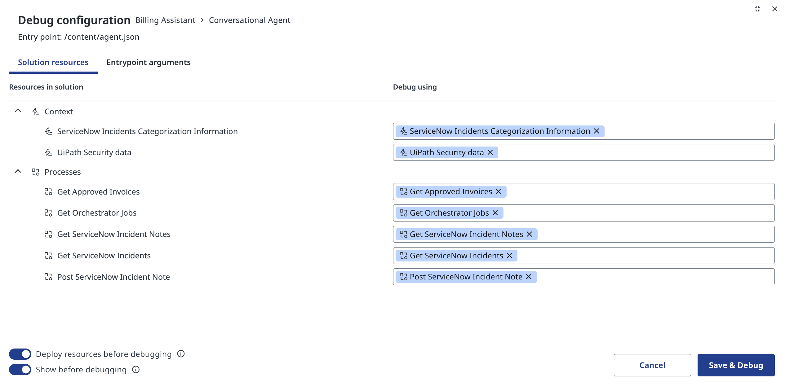
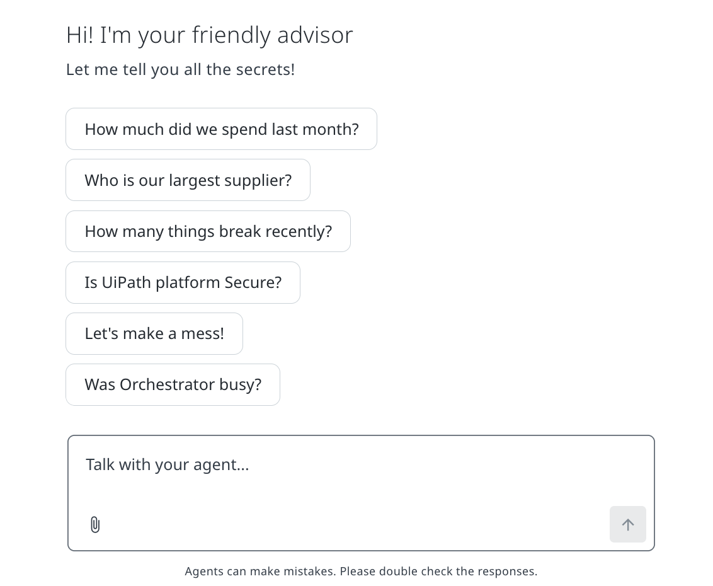
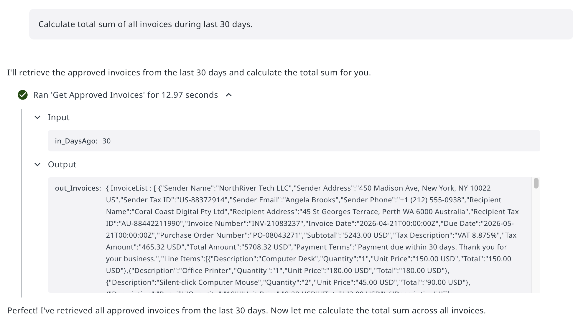
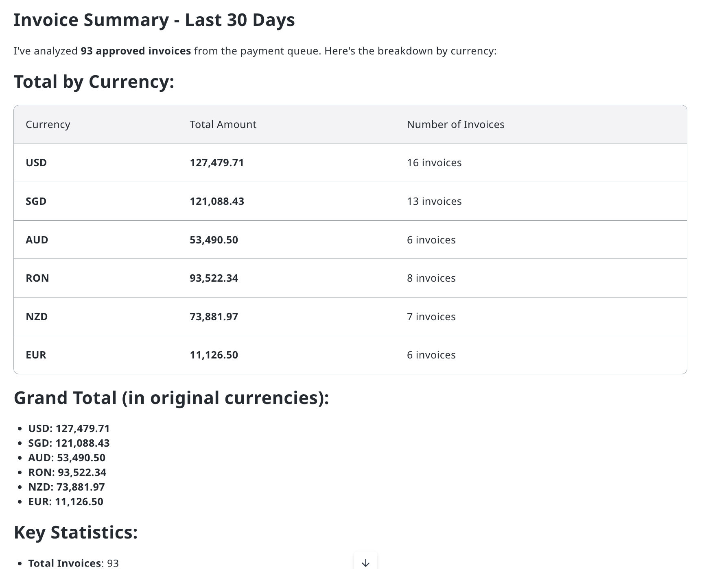
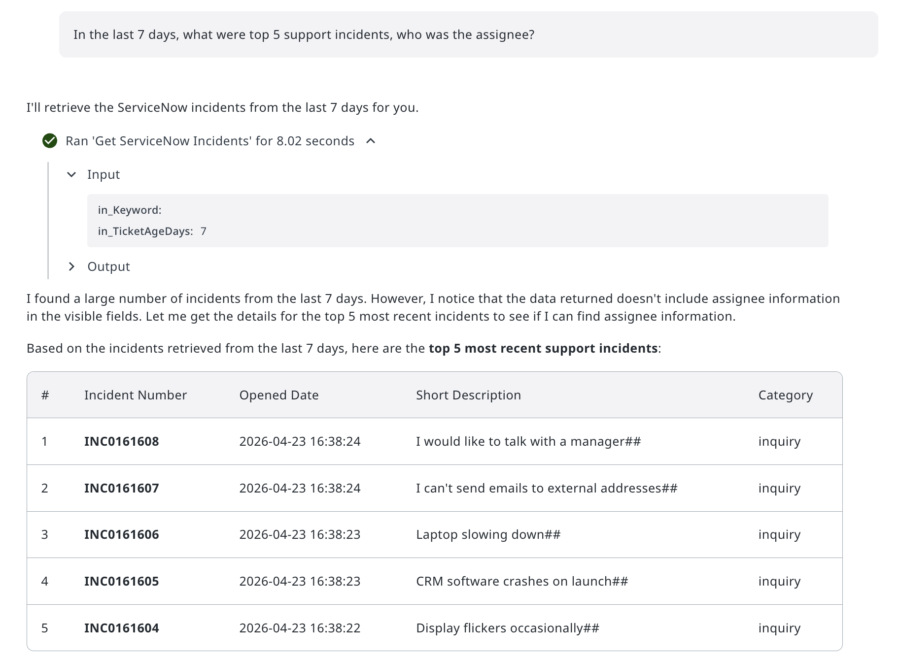
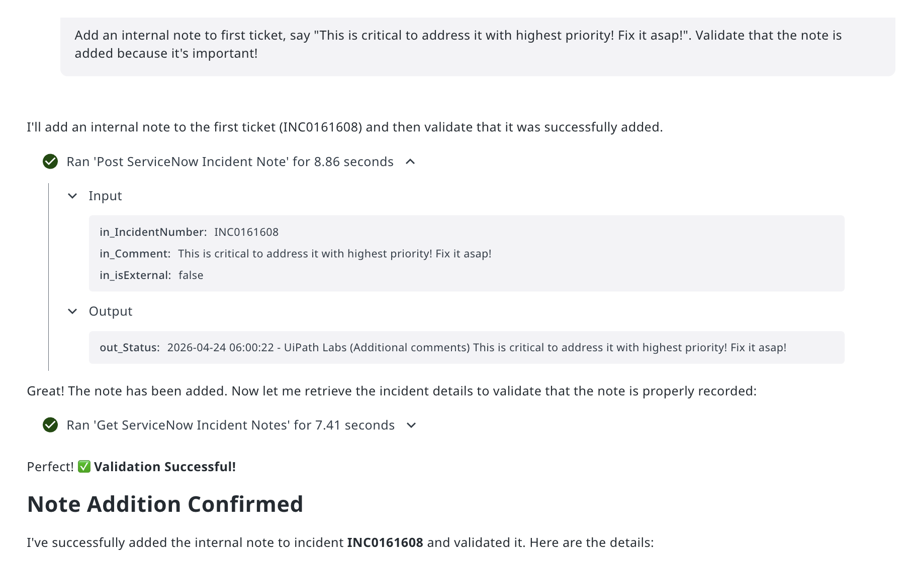
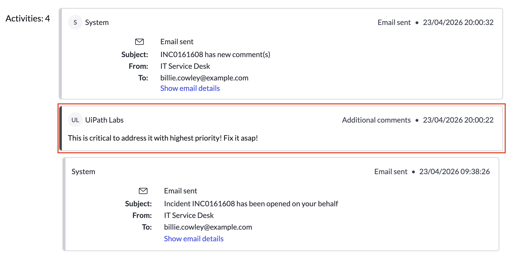
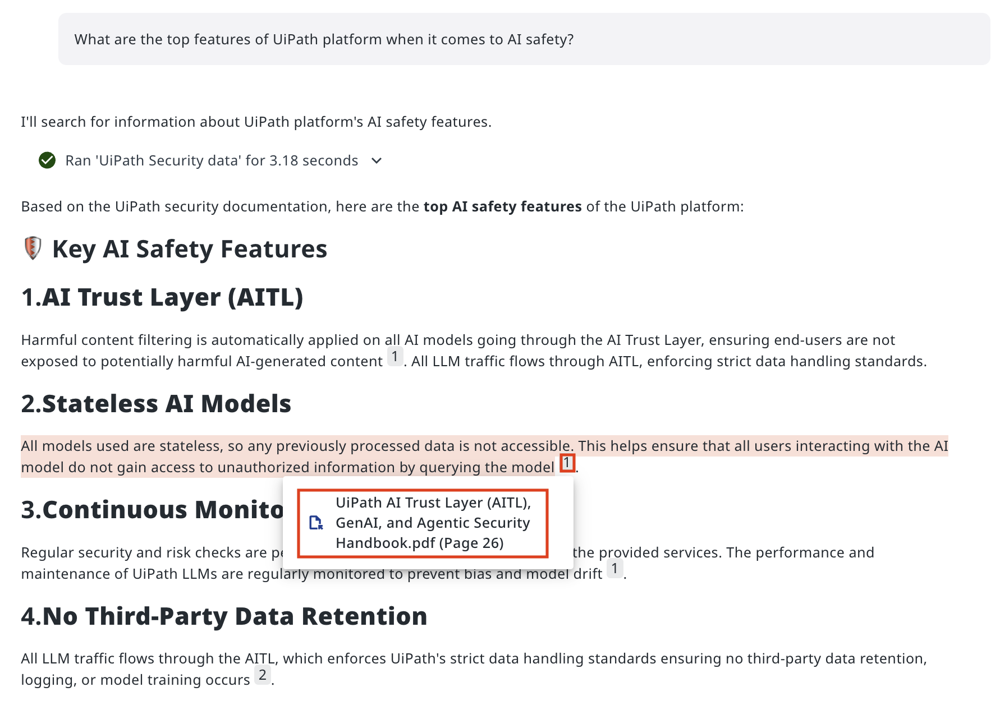
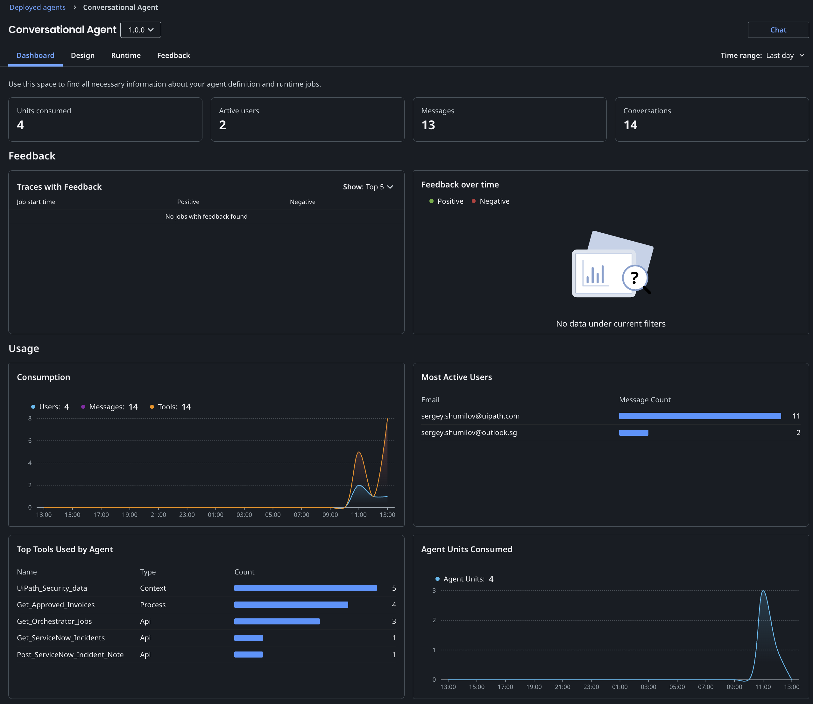

Giving It a Try¶
Here is our plan for this lesson:
- Run the agent in debug mode and try it from several different angles
- Test starting prompts to make common questions easy to kick off
- Evaluate each response - does the agent use the right tools, cite its sources, and handle write operations correctly?
Goal¶
By the end of this lesson, you'll have run your agent through four types of conversations: a data query, an incident lookup, a post comment operation, and a knowledge question grounded in your context sources. You'll use the debug interface to watch each tool call happen in real time, and judge for yourself whether the responses are accurate and trustworthy.
Testing by conversation¶
Automated testing catches regressions. Manual conversation testing catches something different: whether the agent actually makes sense and gives you what you want. If something is wrong - go back and review the prompt.
When you run a conversation test, look at four things:
- Tool usage - Did the agent call the right tool? Did it pass sensible arguments?
- Response quality - Is the answer accurate, well-formatted, and appropriately detailed?
- Write operations - When the agent changes data, does the change actually stick?
- Grounding - When the answer comes from your documentation, is it properly cited?
A few well-chosen conversations across these four categories gives you a solid read on agent quality.
Steps¶
1. Start a chat session¶
Click Debug to open the debug configuration dialog. Review the resources listed under Context and Processes - these are what the agent will have access to during the session.

Make sure all the tools and context sources you want to test are ticked, then click Save & Debug.
2. See the chat interface¶
The chat loads with your starting prompt chips ready to go.
Click one of the chips or type your own message. The agent always receives the full actual prompt - not just the short display text.

3. Test a data query: invoice spending¶
Click How much did we spend last month? The actual prompt sent to the agent is:
Watch the execution trace. The agent calls Get Approved Invoices with in_DaysAgo: 30 and receives a full invoice list from Data Fabric in return:

The agent then processes the data and returns a clean summary:
Check that the numbers and currency breakdown look reasonable for the volume of invoices you know is in the system.

4. Test an incident lookup¶
Click How many things break recently? The actual prompt is:
The agent calls Get ServiceNow Incidents with in_TicketAgeDays: 7 and returns a list of recent tickets, which agent analyzes and responds with top five:

Notice that when assignee information isn't returned in the initial result, the agent flags it rather than inventing data. That's a good sign.
Now for the trickier one. Type:
Add an internal note to first ticket, say "This is critical to address it with highest priority! Fix it asap!". Validate that the note is added because it's important!
The agent calls Post ServiceNow Incident Note, then immediately runs Get ServiceNow Incident Notes to verify the change:

The agent doesn't just fire off the write and assume it worked - it validates. That's the right behaviour to look for.
To be very sure, you can ask your trainer to look up the incident directly in ServiceNow and check the activity timeline. The agent made a real change in a live system - the note appears exactly as written.

5. Test context grounding¶
Finally, click Is UiPath platform Secure? The actual prompt asks specifically about AI safety features.
The agent searches the UiPath Security data context source and returns a structured answer. Click the citation marker (1) to verify the source:

The citation links back to the correct page in the grounded knowledge base. Whenever you click, you will be redirected to the source document/file. Answers without citations - or citations pointing to the wrong document - are a signal that the context source needs revisiting.
6. Going live¶
Just like any other UiPath solution, agent needs to be published and deployed into a folder.
To avoid too many copies, we can use this one published into Conversational Agent folder for everyone: direct link. It will appear in Deployed Agents list and you can monitor statistics and usage data. Feedback sent by users will be also populated here:

You can even embed conversational agents into your applications!
Everything looks just nice and the exercise is complete!